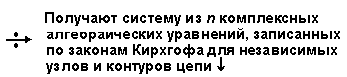

Сущность комплексного метода расчёта, применяемого обычно для расчёта сложных электрических цепей синусоидального тока в установившихся режимах, заключается в следующем:
• путём функционального преобразования осуществляют переход от временных (синусоидальных) функций к комплексным, что позволяет заменить решение системы дифференциальных уравнений, описывающих электромагнитные процессы в цепи, решением соответствующей системы алгебраических уравнений, составленных относительно комплексов функций;
• выражения тока, напряжения и т. д. во времени получают посредством обратного перехода от комплексов к синусоидальным функциям (см. п. 2.1.5).
Порядок расчёта выходной синусоидальной функции f1(t) линейной электрической цепи с п ветвями комплексным методом представлен в таблице 2.1.
Таблица 2.1
Таблица 2.1
|
Область синусоидальных функций времени t |
Область функций комплексного переменного jw |
|
Пользуясь комплексным методом, определить выходную синусоидальную функцию f 1(t) линейной цепи с n ветвями |
|
|
Записывают посредством законов Кирхгофа для независимых узлов и контуров цепи систему из n алгебраических и интегрально-дифференциальных уравнений, в которую входит искомая функция f1(t) |
 |
|
Получают искомую синусоидальную функцию f1(t) |
|
Широкое применение комплексного метода расчёта цепей синусоидального тока в установившихся режимах объясняется следующими соображениями:
• метод предельно формализован, что упрощает расчёт электрических цепей синусоидального тока сложной конфигурации;
• рассмотренные в п. 1.2 методы расчёта цепей постоянного тока (ЗК, МУН, МКТ, МЭГ и др.) применимы к расчёту цепей синусоидального тока комплексным методом. По внешним признакам они
очень схожи: сохраняются все правила составления систем уравнений, однако при их записи посредством комплексных чисел используют комплексные сопротивления Zk ветвей цепи (вместо сопротивлений Rk), а вместо синусоидальных электрических величин (ЭДС e, напряжения u, тока i) − их комплексы: E, U, I;
• посредством комплексного метода рассчитывают частотные характеристики электрических величин.